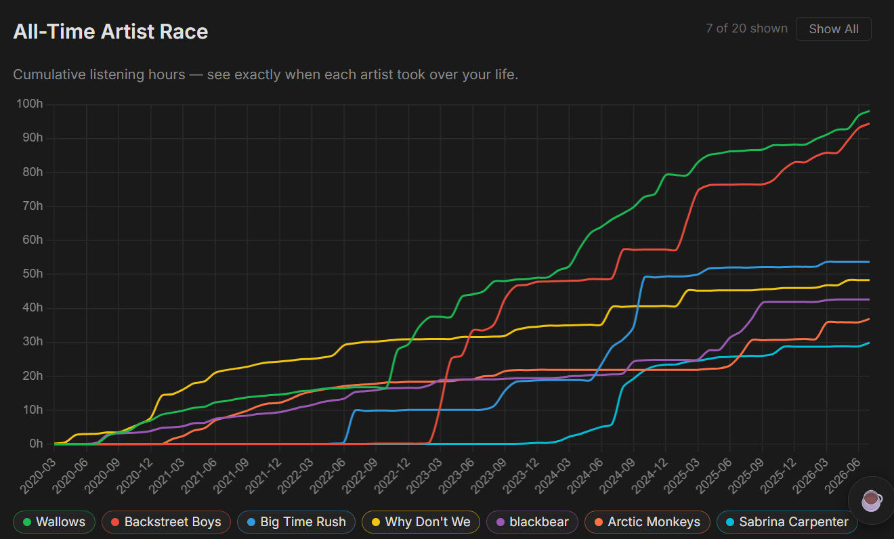

Original Chart

My Recreation
This is my completed recreation of the original chart.

Reflection
I chose to base my visualisation on my cumulative Spotify listening hours for my Top 7 Artists since it was both personal and readily available. Spotify statistics are something that many people enjoy exploring, particularly Spotify Wrapped, but I wanted to present mine in a way that went beyond the familiar Wrapped format. Rather than showing a single year or snapshot of my listening habits, the cumulative ‘artist marathon’ graph captured how my music taste evolved over time. Although the data is my own Spotify data, the visualisation that I recreated was generated on a website that is referenced below. I am very happy with the clarity of the final visualisation; the colour palette ensures that each artist is easy to identify, with help of the legend at the bottom, and I was happy with how neat and accurate the finished product turned out. Looking at the data also allowed me to recognise different periods of my life through my changing music taste, which demonstrates how effective some data visualisations can be at revealing patterns that are not immediately obvious from a dataset alone. The most challenging aspect I found was maintaining accuracy while drawing by hand. Although I relied on a ruler for the majority of it, and ensuring to sketch it using pencil prior to using the coloured fine-liners, a few sections of the graphs were curved. Sketching the curved sections was by far the hardest part of this exercise, but I think the results turned out really well despite this. The use of grid paper, though, was extremely helpful. If I had more time, I would have liked to experiment with different colours and include some more fun, artistic elements to make the visualisation more visually interesting. Overall though, this exercise gave me a much greater appreciation for the likes of William Playfair, Charles Joseph Minard and Florence Nightingale, considering the need for extraordinary patience and precision before modern software was created. Ultimately, this was a very fun exercise and I have most definitely taken modern technology for granted!
View evidence of my working!
These photographs document the development of my work throughout the exercise.